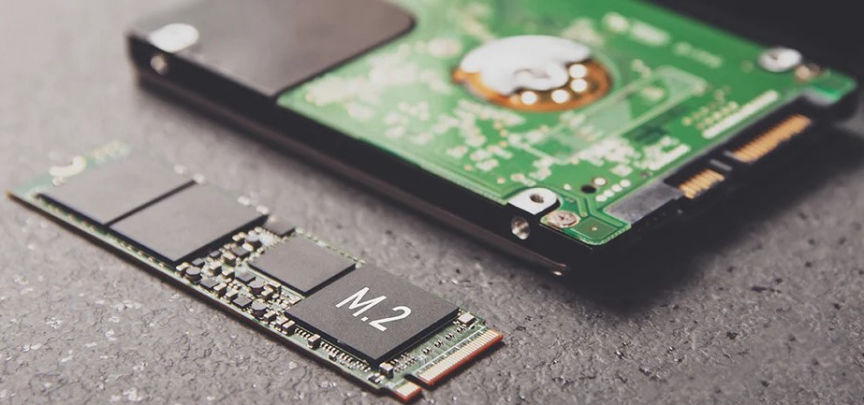
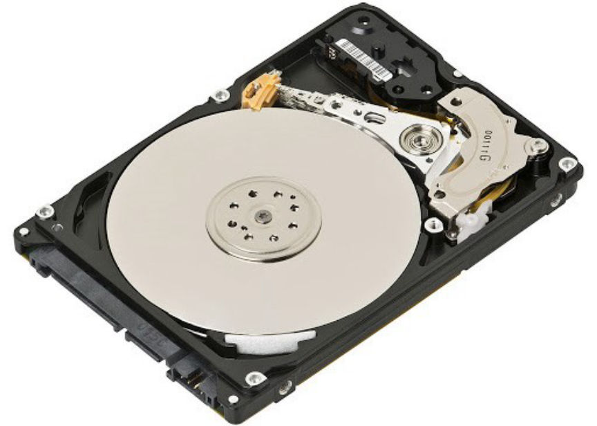
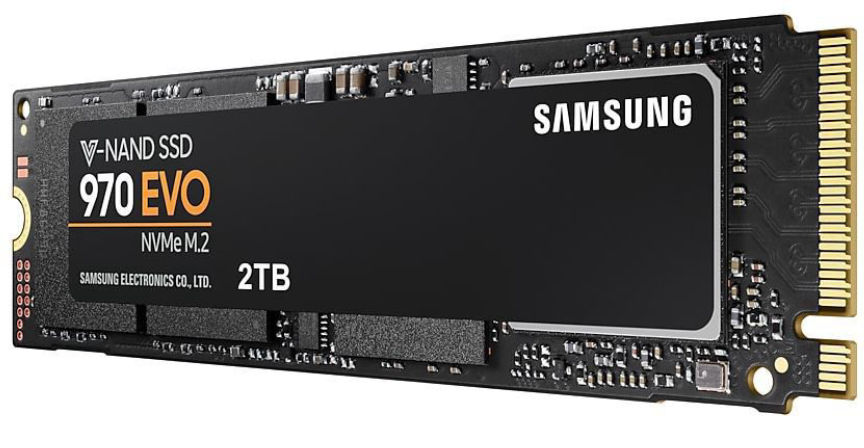
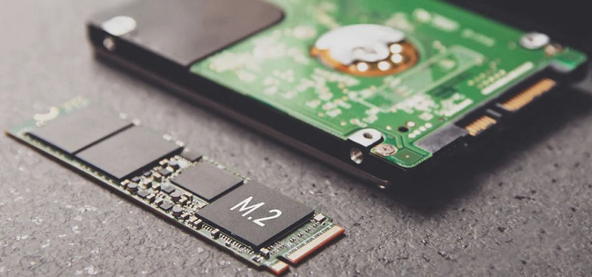
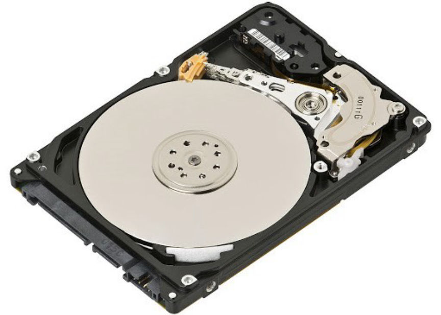
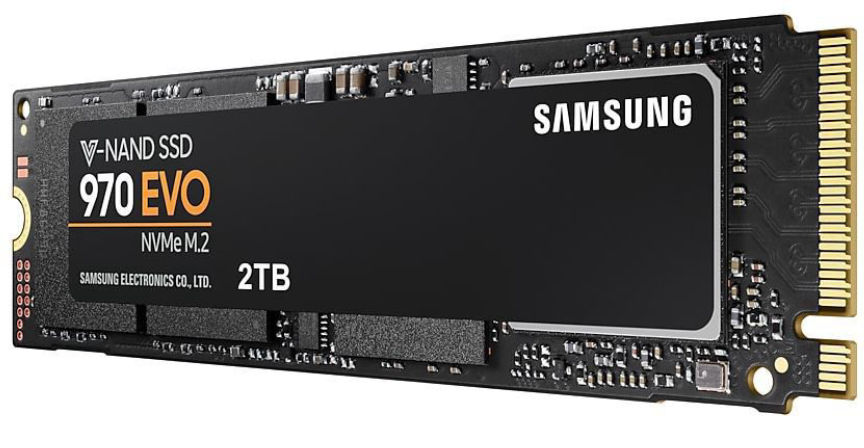

How to Securely Erase A Drive
You may for some reason decide to completely wipe your hard disk drive (HDD) or solid-state drive (SSD) to ensure your data does not fall into the wrong hands.

Formatting your drive will delete all the files, but the process leaves traces of the erased data. The data you deleted can as a result be easily recovered.
In an HDD, the data is written on a magnetic disk, and the OS can tell precisely where the data is. Secure deletion on an HDD can therefore be easily done as the OS knows where to delete the data.

To easiest way to securely erase your data from an HDD is to overwrite it multiple times until no traces of your data are left. To do this, you can use tools such as Darik's Boot and Nuke (DBAN) or ShredOS.
Since DBAN is unmaintained, we are going to look into how you can use ShredOS.
An SSD is divided into blocks that are further divided into pages. When a file is saved it is written on several pages in a block.

Erasing and re-writing wares out the Blocks. SSD's blocks can only be erased and rewritten a finite number of times before they wear out. To increase their longevity SSDs use a technique known as wear leveling. It ensures that every block is erased and rewritten the same number of times.
When you delete a file from an SSD the pages and the block it was stored in will be marked as invalid and the drive will write new data in a new block. This makes it hard to securely delete files in an SSD as there is no guarantee that the drive will overwrite the same block that the file you deleted was located.
All modern Operating Systems by default support a command known as Trim Operation. The Trim command tells the SSD's drive controller that there are pages within blocks containing data that is ready for deletion.
When you delete a file your OS issues a Trim command to the SSD controller letting it know that the pages where the file is stored are free for deletion. Trim also makes the data unreadable.
After being notified of the existence of data that is ready for deletion the SSD controller runs a process known as Garbage collection. Garbage collection goes through the drive and identifies the block with pages that Trim marked as ready for deletion. It copies the valid pages to different pages in a free block and then erases the whole of the source block.
Garbage collection erases data from your SSD drive permanently.
Deletion coupled with Trim would render the deleted files highly unrecoverable.
The following methods are used to wipe data from SSDs:
You can sanitize your SSD in several ways:
To securely wipe your whole SSD with any of the above methods, you can use any of the following tools.
Most reputable manufacturers offer software to securely erase their SSDs.
The tools include:
There are third-party tools that you can use to securely erase your SSD.
They include:
hdparm has Linux commands that you can use to securely wipe your SSD
Run the following command to check if your SATA drive supports Sanitize: hdparm --sanitize-status /dev/sdx
To perform sanitize crypto scramble on a self-encrypting SSD use: hdparm --yes-i-know-what-i-am-doing --sanitize-crypto-scramble /dev/sdX
To perform sanitize block erase on non-self-encrypting SATA SSD use: hdparm --yes-i-know-what-i-am-doing --sanitize-block-erase /dev/sdX
For maximum security, depending on your threat model, you can destroy the drive after securely erasing your data and discard its parts at different places.

Formatting your drive will delete all the files, but the process leaves traces of the erased data. The data you deleted can as a result be easily recovered.
Securely Erase your HDD
In an HDD, the data is written on a magnetic disk, and the OS can tell precisely where the data is. Secure deletion on an HDD can therefore be easily done as the OS knows where to delete the data.

To easiest way to securely erase your data from an HDD is to overwrite it multiple times until no traces of your data are left. To do this, you can use tools such as Darik's Boot and Nuke (DBAN) or ShredOS.
Since DBAN is unmaintained, we are going to look into how you can use ShredOS.
- Go here to download the ShredOS image file.
- For Windows users use either Rufus or Etcher to write the ShredOS to your USB drive.
- Reboot your device and boot from the USB key.
- Follow the on-screen instructions to permanently wipe your drive.
Securely Erase your SSD
An SSD is divided into blocks that are further divided into pages. When a file is saved it is written on several pages in a block.

Erasing and re-writing wares out the Blocks. SSD's blocks can only be erased and rewritten a finite number of times before they wear out. To increase their longevity SSDs use a technique known as wear leveling. It ensures that every block is erased and rewritten the same number of times.
When you delete a file from an SSD the pages and the block it was stored in will be marked as invalid and the drive will write new data in a new block. This makes it hard to securely delete files in an SSD as there is no guarantee that the drive will overwrite the same block that the file you deleted was located.
All modern Operating Systems by default support a command known as Trim Operation. The Trim command tells the SSD's drive controller that there are pages within blocks containing data that is ready for deletion.
When you delete a file your OS issues a Trim command to the SSD controller letting it know that the pages where the file is stored are free for deletion. Trim also makes the data unreadable.
After being notified of the existence of data that is ready for deletion the SSD controller runs a process known as Garbage collection. Garbage collection goes through the drive and identifies the block with pages that Trim marked as ready for deletion. It copies the valid pages to different pages in a free block and then erases the whole of the source block.
Garbage collection erases data from your SSD drive permanently.
Deletion coupled with Trim would render the deleted files highly unrecoverable.
The following methods are used to wipe data from SSDs:
Secure Erase
- It only deletes the mapping table that keeps track of data on the storage blocks. It does not erase the blocks.Sanitize
- It deletes the mapping table and erases all blocks that have been written.You can sanitize your SSD in several ways:
- Crypto Scrabble: Performs the wiping by changing the encryption key of self-encrypting SSDs. This makes the data unreadable.
- Block Erase: Performs memory block erasure to destroy the data.
- Overwrite: Performs block erasure followed by an overite of the blocks.
To securely wipe your whole SSD with any of the above methods, you can use any of the following tools.
Use your BIOS/UEFI
- Go to your device's BIOS or UEFI settings and select your drive.
- If it has the tools select either Secure Erase or Sanitize.
- Follow the instructions to securely wipe your SSD.
Use Manufacturer Tools
Most reputable manufacturers offer software to securely erase their SSDs.
The tools include:
- Intel Solid-State Drive Toolbox
- Samsung Magician SSD Tool
- Crucial SSD Storage Executive
- Western Digital SSD Dashboard
- Seagate SeaTools bootable SSD utility
Use Commercial tools
There are third-party tools that you can use to securely erase your SSD.
They include:
- PartedMagic. It will cost you $15.
- GParted.
Use hdparm utilities
hdparm has Linux commands that you can use to securely wipe your SSD
Run the following command to check if your SATA drive supports Sanitize: hdparm --sanitize-status /dev/sdx
To perform sanitize crypto scramble on a self-encrypting SSD use: hdparm --yes-i-know-what-i-am-doing --sanitize-crypto-scramble /dev/sdX
To perform sanitize block erase on non-self-encrypting SATA SSD use: hdparm --yes-i-know-what-i-am-doing --sanitize-block-erase /dev/sdX
For maximum security, depending on your threat model, you can destroy the drive after securely erasing your data and discard its parts at different places.